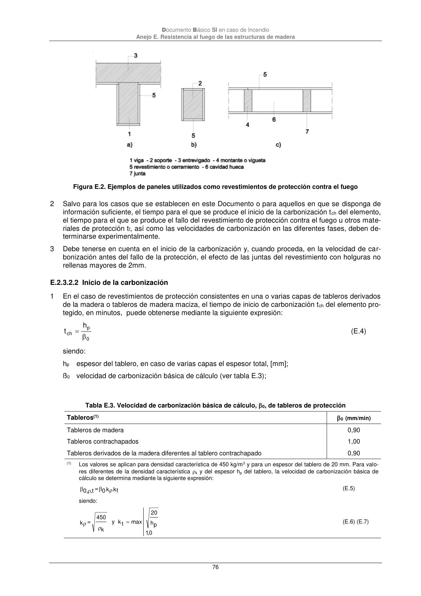

DB-SI · Página 76 · versión 2025-03-04
SHA256: 0a2e78cd62471d9cc5cfe2efbc6aa39fdbad73c124aea7b039f9de96c141e105 · página física 76 de 92 · métodos de encabezado
solo si están cotejados.
Formatos: Markdown · JSON de bloques · PDF p. 76 · imagen PNG
Documento Básico SI en caso de Incendio Anejo E. Resistencia al fuego de las estructuras de madera 76 Figura E.2. Ejemplos de paneles utilizados como revestimientos de protección contra el fuego 2 Salvo para los casos que se establecen en este Documento o para aquellos en que se disponga de información suficiente, el tiempo para el que se produce el inicio de la carbonización tch del elemento, el tiempo para el que se produce el fallo del revestimiento de protección contra el fuego u otros mate- riales de protección tf, así como las velocidades de carbonización en las diferentes fases, deben de- terminarse experimentalmente. 3 Debe tenerse en cuenta en el inicio de la carbonización y, cuando proceda, en la velocidad de car- bonización antes del fallo de la protección, el efecto de las juntas del revestimiento con holguras no rellenas mayores de 2mm. E.2.3.2.2 Inicio de la carbonización 1 En el caso de revestimientos de protección consistentes en una o varias capas de tableros derivados de la madera o tableros de madera maciza, el tiempo de inicio de carbonización tch del elemento pro- tegido, en minutos, puede obtenerse mediante la siguiente expresión: 0 p ch h t (E.4) siendo: hp espesor del tablero, en caso de varias capas el espesor total, [mm]; ß0 velocidad de carbonización básica de cálculo (ver tabla E.3); Tabla E.3. Velocidad de carbonización básica de cálculo, 0, de tableros de protección Tableros(1) 0 (mm/min) Tableros de madera 0,90 Tableros contrachapados 1,00 Tableros derivados de la madera diferentes al tablero contrachapado 0,90 (1) Los valores se aplican para densidad característica de 450 kg/m3 y para un espesor del tablero de 20 mm. Para valo- res diferentes de la densidad característica k y del espesor hp del tablero, la velocidad de carbonización básica de cálculo se determina mediante la siguiente expresión: kt k 0 = t, 0, (E.5) siendo: k 450 = k y 0,1 p h 20 max t k (E.6) (E.7)
